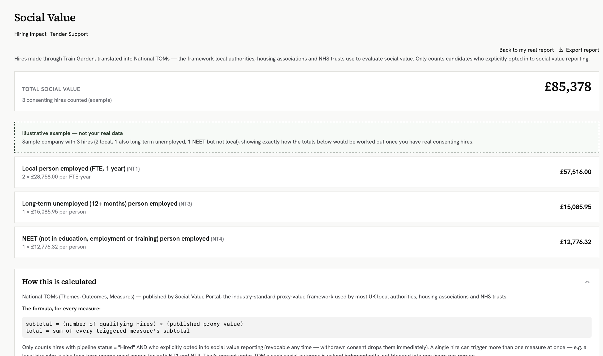

Train Garden
System Architecture & Engineering
Technical Case Study
Full-Stack, Multi-Agent AI Platform
London, UK
Train Garden is a full-stack, multi-agent AI career platform built to match candidates to green-economy roles and generate UK-compliant Social Value reporting for hiring companies.
Architecture
Flask + Flask-CORS API ├─ LangGraph Companion Agent (StateGraph, SqliteSaver checkpointer) │ retrieve → chat → save_memory, per-user persistent state ├─ LangGraph Research Agent (separate StateGraph + checkpointer) │ DuckDuckGo search → reflection node → adequacy check → respond ├─ Dual Vector Memory │ ├─ ChromaDB + all-MiniLM-L6-v2 (semantic user memory) │ └─ Ollama nomic-embed-text (context retrieval) ├─ Multi-Tenant Vaults (candidate / company / partner / admin) │ lock-protected, atomic-write JSON persistence ├─ Semantic Matching → batched cosine similarity vs. string matching └─ Social Value Engine → National TOMs calc + PPN 002 narrative generation
Engineering Decisions
01
Concurrency-Safe Persistence
A process-wide thread lock plus atomic temp-file replacement around every vault and session write, so concurrent requests can't corrupt candidate or company data mid-write.
02
Fault-Tolerant LLM Parsing
A balanced-brace JSON slicer with regex recovery, so structured extractions still succeed when a model returns a truncated or malformed response.
03
Semantic Match Calibration
Skill and job matching runs on batched cosine similarity rather than string matching, with confidence scores logged so match thresholds can be tuned against real outcomes over time.
04
Procurement-Ready Social Value
Real-time National TOMs monetisation (NT1/NT3/NT4 proxy values) plus a grounded PPN 002 narrative generator, output in the format central government tenders require.
05
Link Verification Engine
Multi-threaded HEAD/GET checks confirm external resources actually resolve before they're shown to a candidate, falling back to a live search query if a link is dead.
06
Consent-Decoupled Privacy
Candidate matching visibility is decoupled from social value consent, so a candidate can be matched to roles without automatically opting their data into a company's reporting.